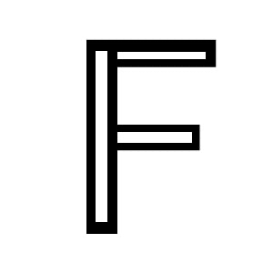

Mapa de imágenes 2
A partir de la imagen que podrás descargar a continuación genera un mapa de imagen según las siguientes
especificaciones:
- El área negro delimitado por los puntos 95,44 y 128,257 envía al usuario a https://www.google.com/ cuando se
pulsa. En su interior tiene un área definido por los puntos 104,56 y 117,244 que es inerte cuando es
pulsado, generando un hueco.
- El área negro delimitado por los puntos 128,44 y 235,74 envía al usuario a https://es.wikipedia.org/ cuando
se pulsa. En su interior tiene un área definido por los puntos 128,56 y 226,65 que es inerte cuando es
pulsado, generando un hueco.
- El área negro delimitado por los puntos 128,138 y 220,165 envía al usuario a https://adaits.es/ cuando se
pulsa. En su interior tiene un área definido por los puntos 128,144 y 211,156 que es inerte cuando es
pulsado, generando un hueco.
